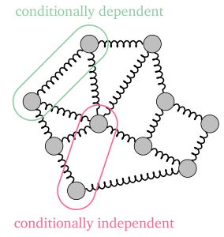

Metrology with matrices
Where metrology is concerned, the actual unit of observation and how it is encoded for us is critical to how analysts may proceed with quantifying, modeling, and measuring uncertainty around observed phenomena. Experiment and observation tends to be organized as inputs and outputs, or, independent variables and dependent variables, specifically. Independent variables are observed, multiple times (“observations”), and changes in outcome for each can be compared to the varying values associated with the independent variable input (“features”). For generality, say a practitioner records their measurements as scalar values, i.e. \(x\in\mathbb{S}\in\{\mathbb{R,Z,N},\cdots\}\). The structure most often used to record scalar values of \(n\) independent/input variable features over the course of \(m\) observations is called a design matrix \(X:\mathbb{S}^{m\times n}\).1
1 Not all observations are scalar, but they can become so. If individual measurements are higher-dimensional (e.g. images are 2D), X is a tensor, which can be transformed through unrolling or embedding into a lower dimensional representation before proceeding. There are other techniques for dealing with e.g. categorical data, such as one-hot encoding (where the features are binary for each possible category, with boolean entries for each observation).
Observation and feature “spaces”
If we index a set of observations and features, respectively, as \[ i\in I=\{1,\cdots,m\}, \quad j\in J=\{1,\cdots,n\},\qquad I,J:\mathbb{N}\] then the design matrix can map the index of an observation and a feature to the corresponding measurement. \[ x=X(i,j)\qquad X : I\times J \rightarrow \mathbb{S} \tag{2.1}\] i.e. the measured value of the \(j\)th independent variable from the \(i\)th observation.2 In this scheme, an “observation” is a single row vector of features in \(\mathbb{S}^{n\times 1}\) (or simply \(\mathbb{S}^{n}\)), such that each observation encodes a position in the space defined by the features, i.e. the feature space, and extracting a specific observation vector \(i\) from the entire matrix can be denoted as \[\mathbf{x}_i=X(i,\cdot),\quad \mathbf{x}:J\rightarrow\mathbb{S}\] Similarly, every “feature” is associated with a single column vector in \(\mathbb{S}^{1\times m}\), which can likewise be interpreted as a position in the space of observations (the data space): \[\mathbf{x}_j'=X(\cdot,j),\quad \mathbf{x}':I\rightarrow\mathbb{S}\] Note that this definition could be swapped without loss of generality. In other words, \(\mathbf{x}\) and \(\mathbf{x}'\) being in row and column spaces is somewhat arbitrary, having more to do with the logistics of experiment design and data collection. We could have measured our feature vectors one-at-a-time, measuring their values over an entire “population”, in effect treating that as the independent variable set.3
2 This notation is adapted from the sparse linear algebraic treatment of graphs in [1] and [2].
[1]
J. Kepner and J. Gilbert, Graph algorithms in the language of linear algebra. Philadelphia: Society for Industrial; Applied Mathematics, 2011.
[2]
J. Kepner et al., “Mathematical foundations of the GraphBLAS,” in 2016 IEEE high performance extreme computing conference ( HPEC), Sep. 2016, pp. 1–9. doi: 10.1109/HPEC.2016.7761646.
3 In fact, vectors are often said to be in the column-space of a matrix, especially when using them as transformations in physics or deep learning layers. We generally follow a one-observation-per-row rule, unless otherwise stated.
To illustrate this formalism in a relevant domain, let’s take another look at co-citation networks. For \(m\) papers we might be aware of \(n\) total authors. For a given paper, we are able to see which authors are involved, and we say those authors “activated” for that paper. It makes sense that our observations are individual papers, while the features might be the set of possible authors. However, we are not given information about which author was invited by which other one, or when each author signed on. In other words, the measured values are strictly boolean, and we can structure our dataset as a design matrix \(X:\mathbb{B}^{m\times n}\). We can then think of the \(i^{\mathrm{th}}\) paper as being represented by a vector \(\mathbf{x}_i:\mathbb{B}^n\), and proceed using it in our various statistical models. If we desired to analyze the set of authors, say, in order to determine their relative neighborhoods or latent author communities, we could equally use the feature vectors for each paper, this time represented in a vector \(\mathbf{x}'_j:\mathbb{B}^{1\times m}\).
Models & linear operators
Another powerful tool an analyst has is modeling the observation process. This is relevant when the observed data is hypothesized to be generated by a process we can represent mathematically, but we do not know the parameter values to best represent the observations (or the observations are “noisy” and we want to find a “best” parameters that account for this noise). This is applicable to much of scientific inquiry, though one common use-case is the de-blurring of observed images (or de-noising of signals), since we might have a model for how blurring “operated” on the original image to give us the blurred one. We call this “blurring” a linear operator if it can be represented as a matrix4, and applying it to a model with \(l\) parameters is called the forward map: \[\mathbf{x} = F\mathbf{p}\qquad F:\mathbb{R}^{l}\rightarrow \mathbb{R}^n\] where \(P\) is the space of possible parameter vectors, i.e. the model space. The forward map takes a modeled vector and predicts a location in data space.
4 in the finite-dimensional case
Of critical importance, then, is our ability to recover some model parameters from our observed data, e.g. if our images were blurred through convolution with a blurring kernel, then we are interested in deconvolution. If \(F\) is invertible, the most direct solution might be to apply the operator to the data, as the adjoint map: \[ \mathbf{p} = F^H\mathbf{x}\qquad F^H:\mathbb{R}^{n}\rightarrow \mathbb{R}^l\] which removes the effect of \(F\) from the data \(\mathbf{x}\) to recover the desired model \(\mathbf{p}\).
Trivially we might have an orthogonal matrix \(F\), so \(F^H=F^{-1}\) is available directly. In practice, other approaches are used to minimize the residual: \(\hat{\mathbf{p}}^=\min_{\mathbf{p}} F\mathbf{p}-\mathbf{x}\). Setting the gradient to 0 yields the normal equation, such that \[ \hat{\mathbf{p}}=(F^TF)^{-1}F^T\mathbf{x}\] This should be familiar to readers as equivalent to solving ordinary least-squares (OLS). However, in that case it is more often shown as having the design matrix \(X\) in place of the operator \(F\).
This is a critical distinction to make: OLS as a “supervised” learning method treats some of the observed data we represented as a design matrix previously as a target to be modeled, \(y=X(\cdot,j)\), and the rest maps parameters into data space, \(F=X(\cdot,J/j)\). With this paradigm, only the target is being “modeled” and the rest of the data is used to create the operator. In the citation network example, it would be equivalent to trying to predict one variable, like citation count or a specific author’s participation in every paper, given every other author’s participation in them.
For simplicity, most work in the supervised setting treats the reduced data matrix as X, opting to treat \(y\) as a separate dependent variable. However, our setting will remain unsupervised, since no single target variable is of specific interest—all observations are “data”. In this, we more closely align with the deconvolution literature, such that we are seeking a model and an operation on it that will produce the observed behavior in an “optimal” way.
Measurement quantification & error
In binary data, such as what we have been considering, it is common to model observables as so-called “Bernoulli trials”: events with two possible outcomes (on, off; yes, no; true, false), and one outcome has probability \(p\). These can be thought of as weighted coin-flips: “heads” with probability \(p\), and “tails” \(1-p\). If \(k\) trials are performed (the “exposure”), we say the number of successes \(s\) (the “count”) is distributed as a binomial distribution \(s\sim Bin(p,k)\). The empirical estimate for the success probability is \(\hat{p}=\tfrac{s}{k}\).
Note that this naturally resembles marginal sums on our design matrix \(X\), if we treat columns (or rows!) as an array of samples from independent Bernoulli trials: \(\hat{p}_j = \frac{\sum_{i\in I} X(i,j)}{m}\). Many probability estimates involving repeated measurements of binary variables (not simply the row/column variables) have this sort of \(\frac{\textrm{count}}{\textrm{exposure}}\) structure, as will become useful in later sections.
However, if we are “measuring” a probability, we run into issues when we need to quantify our uncertainty about it. For instance, an event might be quite rare, but if in our specific sample we never see it, we still do not generally accept a probability of zero.
Additive Smoothing
One approach to dealing with this involves adding pseudocounts that smooth out our estimates for count/exposure, from which we get the name “additive smoothing”.[CITE?] \[\hat{p} = \frac{s+\alpha}{k+2\alpha} \] Adding 1 success and 1 failure (\(\alpha=1\)) as pseudocounts to our observations is called Laplace’s Rule of Succession, or simply “Laplace smoothing,”5 while adding \(\alpha=0.5\) successes and failures is called using Jeffrey’s Prior. It’s so-called because this pseudocount turns out to be a special case of selecting a Beta prior on the Bernoulli probability \(p\sim \textrm{Beta}(\alpha, \beta)\), such that the posterior distribution for \(p\) after our observations is \(\textrm{Beta}(s+\alpha, k-s+\beta)\), which has the mean: \[ E[p|s,k]=\frac{s+\alpha}{k-\alpha+\beta} \tag{2.2}\]
5 derived when Laplace desired estimates of probability for unobserved phenomena, such as the sun (not) rising tomorrow.
6 A useful comparison of the two priors (1, 0.5) is to ask, given all of the trials we have seen so far, whether we believe we are near the “end” or “middle” of an average run of trials. For \(\alpha=1\), we believe nearly all evidence has been collected, but for \(\alpha=0.5\), only half of expected evidence has been observed.
This exactly recovers additive smoothing with a Jeffrey’s prior for \(\alpha=\beta=0.5\).6 This generalization allows us to be more flexible, and specify our prior expectations on counts or exposure with more precision. Such models provide both an estimate of the aleatory uncertainty (via the posterior distribution), and a form of “shrinkage” that prevents sampling noise from unduly affecting parameter estimates (via the prior distribution). Despite being a simple foundation, this treatment of “counts” and “exposure” can be built upon in many ways.
Conditional Probabilities & Contingencies
In dependency/structure recovery, since our goal involves estimating (at least) pairwise relationships, the independence assumption required to estimate node occurrences as Beta-Binomial is clearly violated.7
7 In fact, a recent method from [3] models probabilistic binary observations, with dependencies, by generalizing the mechanics overviewed here to a fully multivariate Bernoulli distribution, capable of including 3rd- and higher-order interractions, not just pairwise.
[3]
B. Dai, S. Ding, and G. Wahba, “Multivariate bernoulli distribution,” Bernoulli, vol. 19, no. 4, Sep. 2013, doi: 10.3150/12-bejsp10.
However, it’s common to estimate how similar two random variables \(A,B\) are, e.g. if samples of each correspond to columns of binary \(X\). For instance, the joint probabilities \(P(A\cap B)\) answer “how often does A happen with B, out of all data?” Conditional probabilities \(P(A|B)=\frac{P(A\cap B)}{P(B)}\) measure how often A occures given B happened. Once again, we can estimate the base probabilities \(P(A)\) and \(P(B)\) with methods like Equation 2.2 for each marginal sums \(X(\cdot,A)\) or \(X(\cdot,B)\), but the joint and conditional probabilities can instead be estimated using matrix multiplication using the Gram matrix, discussed below. It encodes pair-wise co-occurrence counts, such that \(G(i,i'):\mathbb{Z}^{n\times n}\) has the co-occurrence count for node \(i\) with \(i'\).
For binary data, we typically create association meatures from values on a \(2\times2\) contingency table, with counts and marginals. A shorthand notation for these values is:
\[ \begin{array}{c|cc|c} & B=1 & B=0 & \sum_B \\ \hline A=1 & p_{11} & p_{10} & p_{1\bullet} \\ A=0 & p_{01} & p_{00} & p_{0\bullet} \\ \hline \sum_A & p_{\bullet 1} & p_{\bullet 0} & p_\bullet \\ \end{array} \tag{2.3}\]
The co-occurrence probability \(p_{11}=P(A\cap B)\) for each pair can also be approximated with the beta-binomial scheme mentioned above, but care must be taken not to confuse this with the edge strength connecting two nodes. First, nodes that rarely activate (low node probability) may nonetheless reliably connect to others when they do occur (high edge probability). In fact, without direct observation of edges, we are not able to estimate their count, or their exposure, which can be a source of systemic error from epistemic uncertainty. We don’t know when edges are used, directly, and we also don’t have a reliable way to estimate the opportunities each edge had to activate (their exposure), either. This is especially true when we wish to know whether an edge even can be traversed, i.e. the edge support. Support, as used in this sense, is the set of inputs for which we expect a non-zero output. Intuitively, this idea captures the sense that we might care more about whether an edge/dependency exists, not how important it is. For that, we have to re-assess our simple model: even if we could count the number of times an edge might have been traversed, how do we estimate the opportunities it had to be available for traversal (it’s “exposure”)?
Assuming this kind of epistemic uncertainty can be adequately addressed through modeling—attempts at which will be discussed in more detail in Roads to Network Recovery—conditional probability/contingency tables will again be useful for validation. When comparing estimated edge probability to some known “true” edge existence (if we have that), we can count the number of correct predictions, as well as type I (false positive) and type II (false negative) errors. We can do this at every probability/weight threshold value, as well, and we will return to ways to aggregate all of these values into useful scoring metrics in Simulation Study.
Distance vs. Incidence
As we have already seen, operations from linear algebra make many counting and combinatoric tasks easier, while unifying disparate concepts to a common set of mechanics. In addition to having a map from integer indices to sets of interest, these design matrices/vectors are implicitly assumed to have entries that exist in a field \(F=(\mathbb{S},\oplus,\otimes)\). equipped with operators analogous to addition (\(\oplus\)) and multiplication (\(\otimes\)).8 With this, we are able to define generalized inner products that take pairs vectors in a vector space \(\mathbf{x}\in V\), such that \(\langle\cdot,\cdot\rangle_F:\mathbb{S}^n\times \mathbb{S}^n\rightarrow \mathbb{S}\). \[ \langle\mathbf{x}_a,\mathbf{x}_b\rangle_{F} = \bigoplus_{j=1}^n \mathbf{x}_a(j)\otimes\mathbf{x}_b(j) \]
8 Or, more generally, a semiring if inverse operations for \(\oplus,\otimes\) don’t exist.
We can use this to perform “contractions” along any matching dimensions of matrices as well, since the sum index is well-defined. \[ \begin{aligned} X\in\mathbb{S}^{m\times n}\quad Y\in\mathbb{S}^{n\times m} \\ Z(i,j)=X\oplus,\otimes Y = \bigoplus_{j=1}^{n} X(i,j) \otimes Y(j,k) = XY \end{aligned} \] For ease-of-use, we will assume the standard field for any given set \((\mathbb{S},+,\times)\) if not specified otherwise, which recovers standard inner products \(\langle\cdot,\cdot\rangle\). However, [2] illustrates the usefulness of various fields (or semirings). They allow linear-algebraic representation of many graph operations, such as shortest paths through inner products over \((\mathbb{R}\cup -\infty,\textrm{min}, +)\). This works because discrete/boolean edge weights will not accumulate extra strength beyond 1 under contraction over observations.
Kernels & distances
As alluded to in the previous section, co-occurrence have a deep connection to a Gram matrix, which is a matrix of all pairwise inner products over a set of vectors.
\[ X^TX=G(j,j')=\langle\mathbf{x'}_j,\mathbf{x}_{j'}'\rangle = \sum_{i=1}^{m} X(i,j)X(i,j') \tag{2.4}\]
Matrices that can be decomposed into another matrix and its transpose are symmetric, and positive semidefinite (PSD), making every gram matrix PSD. They are directly related to (squared) euclidean distances through the polarization identity[CITE?]:9 \[ d^2(j,j') = \|\mathbf{x}_{j'}'-\mathbf{x}_{j'}'\|^2 = G(j,j) - 2G(j,j') + G(j',j') \tag{2.5}\]
9 Important: these definitions are all using the \(\mathbf{x}'\) notation to indicate that these measurements are almost exclusively being done in the data space, i.e. on column vectors. While most definitions work on distances in terms of the measurements/objects/data, for inverse problems (like network recovery, structure learning, etc.) they are more often applied in terms of the features (here, the nodes. This can be seen in statistics as well, where covariance and correlation matrices (which are related to the gram and distance matrix definitions above), are defined as relationships between features/dimensions, not individual samples.
In our example from before, the gram matrix will have entries showing the number of papers shared by two authors (or total papers by each, on the diagonal). This is because an inner product between two author (column) vectors will add 1 for each paper in the sum only if it has both authors in common. This is called a bipartite projection[CITE] into the authors “mode”, and is illustrated visually in Figure 1.3 (a).
Due to [CITE Shoenberg/Mercer], we can generalize Equation 2.5 such that any function “kernel” function \(\kappa(x,y)\) that creates PSD matrix \(K(j,j')\in\mathbb{S}^{n\times n}\). It says that such a PSD matrix can always be decomposed into a form \(K=R^TR\) for any matrix \(R(i,j)\in \mathbb{S}^{m\times n}\), thus letting us use the polarization identity to create arbitrary distance metrics. on \(\mathbb{S}^n\) [4]10 \[ d_K(j,j') = \tfrac{1}{2}\left(K(j,j)+K(j',j'))\right)-K(j,j') \tag{2.6}\]
[4]
K. Avrachenkov, P. Chebotarev, and D. Rubanov, “Similarities on graphs: Kernels versus proximity measures,” European Journal of Combinatorics, vol. 80, pp. 47–56, Aug. 2019, doi: 10.1016/j.ejc.2018.02.002.
10 Distance metric, here, means that \(d(x,y)\) satisfies the triangle inequality for all \(x,y\).
This ability to create valid distance measures from arbitrary kernel functions is the core of a vast area of machine learning and statistics that employs the so-called kernel trick. [CITE?] Different kernels yield different properties useful for distinguishing points having specific properties. One class of kernels are normalized to the range \([0,1]\), such that we ensure that equality along any one dimension is given a weight of \(\tilde{K}(j,j)=1\). Such a kernel matrix can be derived from any other kernel, and is often combined with a logarithmic similarity measure \(\tilde{\kappa}(x,y)=\log{s(x,y)}\). \[ \begin{aligned} \tilde{K}(j,j') &= \frac{K(j,j')}{\sqrt{K(j,j)^2K(j',j')^2}}\\ d_{\tilde{K}}(j,j') &= -\log{\tilde{K}(j,j')} \end{aligned} \tag{2.7}\] Since this is equivalent to applying Equation 2.6 to \(s\) directly. This normalization should be familiar as the way cosine similarities and correlation matrices are made as well (also having 1s along their diagonal), and illustrates how non-metric similarities can be potentially made into (pseudo)metrics.
Incidence structures & dependency
Rather than how “close” or “far” to points are in vector space, which is described with the kernels and distances above, whether something “touches”—or, is incident to—something else is usually described abstractly as an incidence structure. This is an abstract way to describe how things “touch”, such as when a set of points lie on a line/plane, or nodes touch an edge. We say an incidence structure is a triple of sets called (for historical reasons) points \(\mathfrak{P}\), lines \(\mathfrak{L}\), and flags \(\mathfrak{I}\).[5] \[(\mathfrak{P,L,I})\quad \mathfrak{I}\subseteq \mathfrak{P}\times\mathfrak{L}\]
[5]
G. E. Moorhouse, “Incidence geometry,” University of Wyoming, pp. 3–5, 2007.
Representing these as matrices will be further explored in Graphs as incidence structures. But, the discrete nature of these incidence sets makes it clear that estimating the size and elements of \(\mathfrak{I}\), is a very different question from estimating the similarity/distance between two entities in a vector space.
In statistics, such discrete structures usually arise when we are concerned with direct dependence from indirect. Take as an example a set of masses connected together by springs. If we shake one mass, all masses will also shake some amount, depending on the spring constants of the springs each mass is “transmitted” force through, and the losses due to friction or air resistance. While the amount of movement over time depends on how “close” in this spring network two masses are, the movement itself can only be transmitted through springs that the masses are incident to. Movement could be modeled through similarity/distance measurements like correlation, since none of the masses are independent (all move when any do), but incidence in terms of spring force transmission is modeled in terms of conditional (in)dependence. If we hold all but two masses still, and moving one doesn’t move the other, then we know they are conditionally independent: no spring connects them!
This idea gets formalized as probabilistic graphical models, which are networks that define “incidence” between two variables as conditional dependence. Letting the random variables in the column-space of \(X\) be \(A,B\) and the remaining columns be \(C=X(\cdot,J\setminus \{A,B\})\), then \[ P(A\cap B |C ) = P(A|C)P(B|C)\implies (A\perp B|C)\implies (A,B)\notin \mathfrak{I} \tag{2.8}\] for a set of incidences \(\mathfrak{I}\) defining a PGM that was sampled as \(X\).